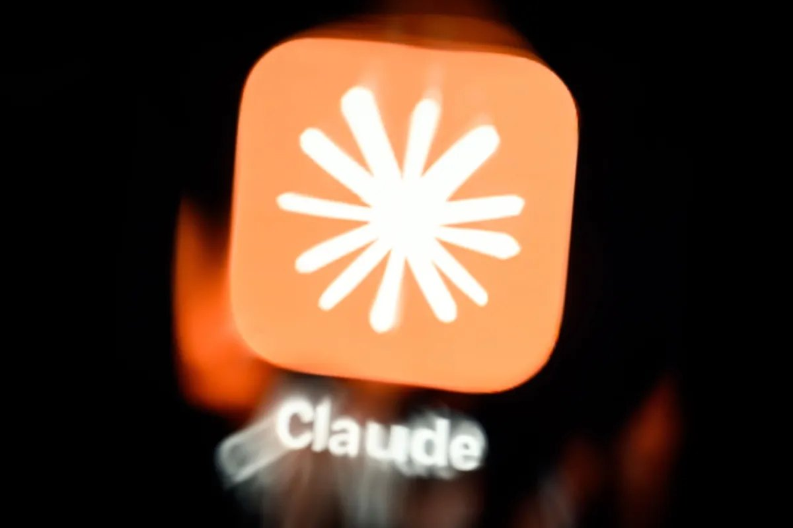

头条 一
Anthropic 递交招股书：上半年收入 163 亿美元，净亏 807 亿

Anthropic 向 SEC 递交 S-1，拟以代码 ANT 上市。上半年收入 163 亿美元（去年同期 12 亿），经营亏损 6.93 亿，净亏 807 亿，主要来自可转债的非现金调整。七位联合创始人合计掌握 50.1% 投票权。
收入涨了十几倍，账面仍大亏；公众股东买到的是缺少控制权的股份。数字取自 TechCrunch 对招股书的转述。
来源：TechCrunch
Anthropic 招股书、微软买断、GPT-6.1 Terra
Anthropic 递交招股书，上半年收入 163 亿美元、净亏 807 亿；微软向约 6 万人提供自愿买断；OpenAI 把 GPT-6.1 Terra 的 API 价格压到前代一半。

Anthropic 向 SEC 递交 S-1，拟以代码 ANT 上市。上半年收入 163 亿美元（去年同期 12 亿），经营亏损 6.93 亿，净亏 807 亿，主要来自可转债的非现金调整。七位联合创始人合计掌握 50.1% 投票权。
收入涨了十几倍，账面仍大亏；公众股东买到的是缺少控制权的股份。数字取自 TechCrunch 对招股书的转述。
微软周一向美国、加拿大、印度和英国的约 6 万名员工（VP 级以下，约占四分之一）推出自愿离职方案，标准遣散待遇，12 月初前决定。游戏、Windows、Copilot 等部门全面参与，AI 与云部分参与。
这是不裁员的减员办法。微软称并非用 AI 替代员工，而是淘汰过时岗位；这一说法暂无独立验证。
OpenAI 发布 GPT-6.1 Terra，API 每百万 token 输入 1 美元、输出 5 美元，标准价比 GPT-5.6 Terra 和 GPT-6.1 Sol 低 50%。官方称最高推理强度下 Terminal-Bench 4.0 解出 50.3%，前代 21.5%。
降价的同时，OpenAI 自称错误率大幅下降。所有基准和对 Claude Opus 5.5 的成本比较均为厂商自测，尚无第三方复现。
Verge 称请外部专家“把关”；原文未读，待核。
自称同级开源最佳，缺独立评测，待核。
论文榜上赞数靠前，细节未读。
HN 高分，课程内容未试。
Verge 称零售商已升级机器人防御。
据 404 Media，称反弹并不真实，待核。
苹果支持文档，影响范围以原文为准。
仓库自述可查漏洞，未实测。
只见 TechCrunch 标题，细节待核。
Verge 称燃料成本与供应是风险项。
量子位报道，细节未读。
站点公告，买方条件以原文为准。
收入涨十几倍仍净亏数百亿，上市后账本每季度都要公开。
买断是不裁员的减员，岗位怎么变，要看谁真的走。
模型降价一半，省下的钱会先流向用量，而不是利润。